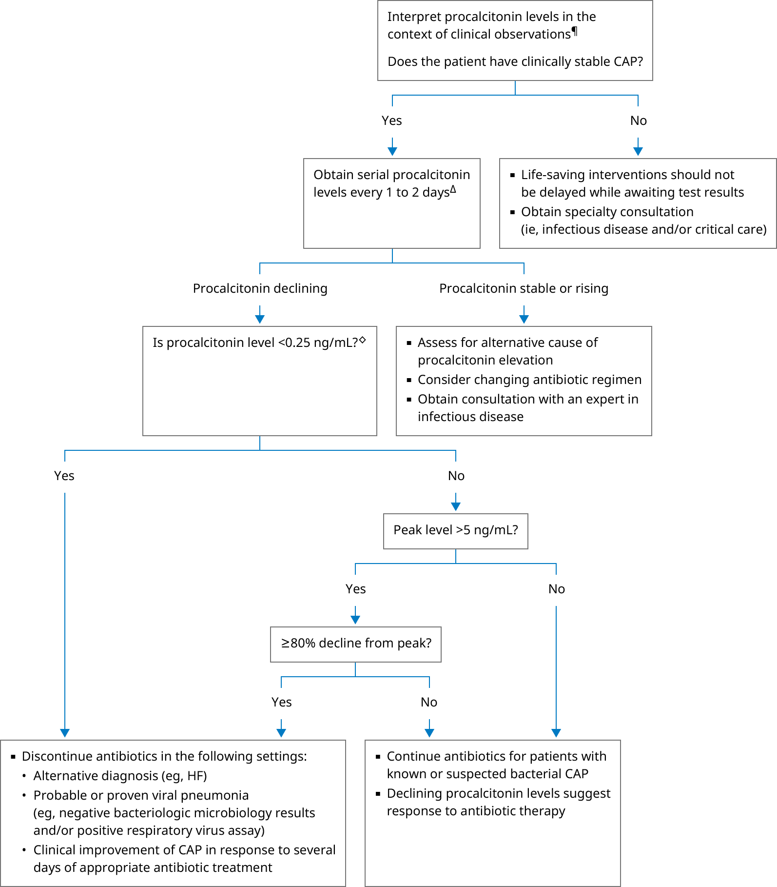

CAP: community-acquired pneumonia; HF: heart failure.
* There are no well-defined reference thresholds based on age or gender for procalcitonin. Levels may vary depending upon the assay used, kidney disease, and the presence and intensity of an inflammatory process. Interpretation of a specific abnormal test result should be based upon the reference range reported by the laboratory.
¶ Procalcitonin should not override clinical judgment because assay sensitivity and specificity are imperfect. Results vary based on the specific assay, type of bacterial infection, and underlying patient comorbidities (eg, renal disease, immunosuppression, surgery/trauma).
Δ Evidence supporting the use of procalcitonin is strongest for helping guide antibiotic discontinuation in clinically stable patients with CAP. Decisions to stop antibiotics based on procalcitonin thresholds should be made in combination with clinical judgment and presume that the patient does not have complications (eg, empyema) that require a longer course of antibiotics.
◊ Optimal thresholds have not been precisely determined. Some experts use a lower threshold, typically 0.1 ng/mL when deciding to discontinue antibiotics.